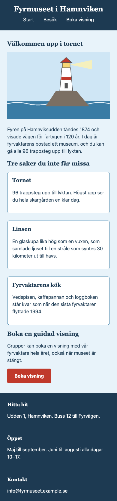
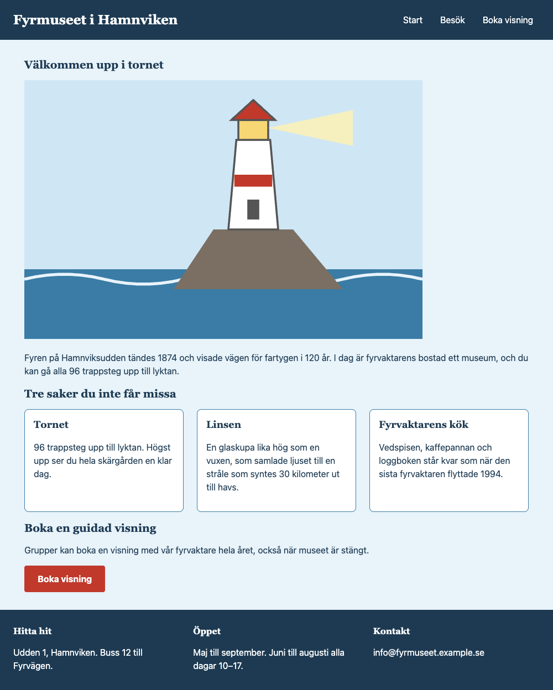

Övning R5 · Mobilen först
Läs så här: Välj en nivå per etapp: 🟢 Grön ger dig varje steg, 🔵 Blå säger vad som behövs men inte koden, 🔴 Röd ger bara kravet. Etapperna är desamma på alla nivåer, så du kan byta nivå mellan etapperna (och mitt i om du fastnar). Varje etapp slutar med Så vet du att etappen är klar: kontrollera den innan du går vidare. Längst ner finns Vanliga fel och, om du vill ha mer, ⚫ Svart.
Du bygger: Fyrmuseets sida från Övning R4 ser bra ut på datorn, men i en mobil är den nästan oläslig. Du gör sidan responsiv, alltså att den anpassar sig efter skärmens bredd. Du arbetar mobil först: först skriver du reglerna så att sidan fungerar på en smal mobilskärm, sedan lägger du till det som bara ska gälla på en bred skärm. Allt testar du i Chromes enhetsläge, där du kan se sidan som på en mobil utan att ha en mobil.

I datorbredd ser sidan ut precis som när du var klar med Övning R4:

Du behöver: mappen ovningar öppen i VS Code, Live Server och Chrome. Mappen r5-start, som ligger som zip-fil bredvid den här övningen i Learnpoint. Den är samma sida som du byggde i Övning R4, färdig, så du börjar från samma läge även om du inte blev klar med R4. Klipp 8 (responsivt) sett.
Etapp 1 · Se sidan som i en mobil
Varför: du behöver ett snabbt sätt att se sidan i mobilbredd varje gång du sparar, och det har Chrome inbyggt.
Enhetsläget (Device Mode på engelska) är en del av DevTools som visar sidan som om den vore på en mobil eller surfplatta. Du slår på och av det med knappen Toggle device toolbar.
🟢 Grön · Steg för steg
- Hämta
r5-start.zipfrån Learnpoint och packa upp den. På Mac dubbelklickar du på zip-filen. På Windows högerklickar du på den och väljer Extrahera alla (Extract All). - Dra mappen
r5-startfrån Finder (Mac) eller Utforskaren (Windows) och släpp den på OVNINGAR i filpanelen i VS Code. - Högerklicka på
index.htmlunderr5-startoch välj Open with Live Server. - Högerklicka någonstans på sidan i Chrome och välj Inspektera (Inspect). DevTools öppnas.
- Längst upp till vänster i DevTools finns två små ikoner. Den första är en pil i en ruta. Den andra ser ut som en mobil framför en surfplatta: det är Toggle device toolbar. Klicka på den. (Kortkommando: Cmd+Shift+M på Mac, Ctrl+Shift+M på Windows, medan DevTools är markerat.)
- Ovanför sidan dyker en verktygsrad upp. Längst till vänster står Dimensions: Responsive. Klicka på det och välj iPhone 12 Pro i listan. Finns den inte, välj en annan iPhone eller en Pixel.
- Titta på sidan. Den ser ut som datorversionen, fast krympt: texten är pytteliten och korten står fortfarande tre i bredd. Så ser sidan ut i en riktig mobil också.
- Klicka på Toggle device toolbar igen. Nu är du tillbaka i vanligt läge. Klicka en gång till för att slå på enhetsläget igen. Låt det vara på resten av övningen.
🔵 Blå · Med ledtrådar
Packa upp r5-start.zip från Learnpoint, lägg mappen r5-start i ovningar och öppna index.html med Live Server. Öppna DevTools och slå på enhetsläget med knappen Toggle device toolbar (ikonen med en mobil framför en surfplatta, längst upp till vänster i DevTools, eller Cmd+Shift+M / Ctrl+Shift+M). Välj en mobil under Dimensions, till exempel iPhone 12 Pro.
🔴 Röd · Bara kravet
Visa sidan i Chromes enhetsläge med en mobil vald och se hur den ser ut.
Etapp 2 · Viewport-raden
Varför: utan den raden låtsas mobilen att skärmen är lika bred som en datorskärm och krymper hela sidan, så ingenting du skriver för mobilen gör någon nytta.
Viewport är den del av sidan som syns i fönstret. Raden <meta name="viewport" content="width=device-width, initial-scale=1" /> i <head> säger till mobilen: gör sidan lika bred som skärmen (width=device-width) och zooma inte (initial-scale=1). Raden ska finnas på alla sidor du gör, också i ditt projekt.
🟢 Grön · Steg för steg
- Öppna
index.htmlunderr5-starti VS Code. Klicka sist på rad 4, efter<meta charset="utf-8" />, och tryck Enter. - Skriv:
<meta name="viewport" content="width=device-width, initial-scale=1" />- Spara. Rad 1–8 ser nu ut så här:
<!doctype html>
<html lang="sv">
<head>
<meta charset="utf-8" />
<meta name="viewport" content="width=device-width, initial-scale=1" />
<title>Fyrmuseet i Hamnviken</title>
<link rel="stylesheet" href="style.css" />
</head>- Titta i enhetsläget i Chrome. Texten har normal storlek. Men nu syns problemen: namnet och menyn trängs på samma rad, de tre korten är smala som pinnar, och bilden på fyren sticker ut utanför skärmen till höger.
🔵 Blå · Med ledtrådar
Lägg till ett meta-element med name="viewport" och content="width=device-width, initial-scale=1" i head, direkt efter meta charset. Spara och titta i enhetsläget.
🔴 Röd · Bara kravet
Sidan ska visas i mobilens verkliga bredd, inte som en krympt datorsida.
Etapp 3 · Bilder som krymper
Varför: en bild är lika bred som bildfilen, och är filen bredare än skärmen sticker bilden ut.
max-width: 100%; på en bild betyder: bli aldrig bredare än lådan du ligger i. På en bred skärm har bilden sin vanliga storlek, på en smal krymper den. height: auto; gör att höjden krymper lika mycket, så att bilden inte blir hoptryckt.
🟢 Grön · Steg för steg
- Öppna
style.cssunderr5-start. Klicka sist på rad 45, efter}som avslutar regelna, och tryck Enter två gånger. - Skriv:
img {
max-width: 100%;
height: auto;
}- Spara och titta i enhetsläget. Bilden på fyren är nu lika bred som texten under den.
🔵 Blå · Med ledtrådar
Skriv en regel för alla img med max-width (i procent, så att bilden aldrig blir bredare än det den ligger i) och height: auto.
🔴 Röd · Bara kravet
Bilden får aldrig vara bredare än skärmen, och den får inte bli hoptryckt.
Etapp 4 · Grundreglerna blir mobilens
Varför: mobil först betyder att reglerna som gäller alltid är mobilens, och på en smal skärm ska saker ligga under varandra.
flex-direction bestämmer åt vilket håll en flexbehållare lägger sina barn: row (på rad, det som gäller om du inte skriver något) eller column (i en kolumn, under varandra). Du sätter column på de tre behållarna som ligger på rad: header, .card-row och footer. Menyn nav får vara kvar på rad, för de tre länkarna får plats bredvid varandra också i en mobil.
🟢 Grön · Steg för steg
- Leta upp regeln
headeristyle.css. Klicka sist på radendisplay: flex;i den regeln, tryck Enter och skrivflex-direction: column;, så att regeln börjar så här:
header {
display: flex;
flex-direction: column;
justify-content: space-between;
align-items: center;- Gör samma sak i regeln
.card-row, så att den blir:
.card-row {
display: flex;
flex-direction: column;
gap: 24px;
}- Och i regeln
footer, så att den börjar:
footer {
display: flex;
flex-direction: column;
gap: 24px;- Spara och titta i enhetsläget. Namnet står överst och menyn under, båda i mitten (
align-items: centerställer nu barnen i mitten från vänster till höger, eftersom de ligger under varandra). Korten och sidfotens delar ligger under varandra. - Slå av enhetsläget och titta i datorbredd. Där ligger nu också allt under varandra. Det är väntat: du har skrivit mobilens regler, och datorns lägger du till i nästa etapp.
🔵 Blå · Med ledtrådar
Lägg till flex-direction: column; i regeln för var och en av de tre flexbehållare som ska ligga under varandra i mobilen: header, .card-row och footer. Låt nav vara.
🔴 Röd · Bara kravet
I mobilbredd ska namnet och menyn, korten och sidfotens delar ligga under varandra. Menylänkarna ska stå kvar på rad.
Etapp 5 · Brytpunkten vid 700 pixlar
Varför: på en bred skärm finns plats att lägga saker bredvid varandra igen, och det ska bara hända när skärmen är tillräckligt bred.
En media query är ett villkor i CSS: @media (min-width: 700px) { … } betyder att reglerna mellan klamrarna bara gäller när fönstret är minst 700 pixlar brett. Bredden där sidan byter utseende kallas brytpunkt. Du har en enda brytpunkt, och media queryn ska stå sist i filen: regler som står senare vinner, så den skriver över grundreglernas column med row på breda skärmar. Inuti media queryn skriver du vanliga regler, med ett extra indrag.
🟢 Grön · Steg för steg
- Klicka allra sist i
style.css, efter}som avslutarfooter div, och tryck Enter två gånger. - Skriv:
@media (min-width: 700px) {
header,
.card-row,
footer {
flex-direction: row;
}
}Selektorn header, .card-row, footer är en gruppering: regeln gäller alla tre. Prettier sätter dem på var sin rad.
- Spara. Slå av enhetsläget: i datorbredd ser sidan ut som när du var klar med Övning R4.
- Slå på enhetsläget igen och välj Responsive under Dimensions. Skriv
699i rutan för bredd (den första sifferrutan i verktygsraden) och tryck Enter: sidan ser ut som i mobilen. Skriv700: allt hoppar upp på rad. Prova några bredder däremellan och större, till exempel500och1000. Du kan också dra i det randiga handtaget till höger om sidan. - Hela
style.cssser nu ut så här. Jämför om något ser konstigt ut:
/* Fyrmuseet i Hamnviken
Paletten:
#1d3a52 mörkblå (text, sidhuvud, sidfot)
#3a7ca5 havsblå (länkar)
#e8f3fa ljusblå (sidans bakgrund)
#c0392b fyrröd (knappen)
#ffffff vit (korten) */
* {
box-sizing: border-box;
}
body {
margin: 0;
font-family: system-ui, Helvetica, Arial, sans-serif;
font-size: 1rem;
line-height: 1.5;
color: #1d3a52;
background-color: #e8f3fa;
}
h1,
h2,
h3 {
font-family: Georgia, serif;
line-height: 1.2;
}
h1 {
margin: 0;
font-size: 1.5rem;
}
h2 {
font-size: 1.25rem;
}
h3 {
margin-top: 0;
font-size: 1.125rem;
}
a {
color: #3a7ca5;
}
img {
max-width: 100%;
height: auto;
}
header {
display: flex;
flex-direction: column;
justify-content: space-between;
align-items: center;
padding: 16px 24px;
color: #ffffff;
background-color: #1d3a52;
}
nav {
display: flex;
gap: 8px;
}
nav a {
display: block;
padding: 8px 12px;
color: #ffffff;
text-decoration: none;
border-radius: 4px;
}
nav a:hover {
background-color: #3a7ca5;
}
main {
max-width: 960px;
margin: 0 auto;
padding: 16px 24px;
}
.card-row {
display: flex;
flex-direction: column;
gap: 24px;
}
.card {
flex: 1;
padding: 16px;
background-color: #ffffff;
border: 1px solid #3a7ca5;
border-radius: 8px;
}
.button {
display: inline-block;
padding: 12px 24px;
color: #ffffff;
font-weight: bold;
text-decoration: none;
background-color: #c0392b;
border-radius: 4px;
}
.button:hover {
background-color: #1d3a52;
}
footer {
display: flex;
flex-direction: column;
gap: 24px;
padding: 16px 24px;
color: #ffffff;
background-color: #1d3a52;
}
footer h2 {
margin-bottom: 0;
font-size: 1rem;
}
footer div {
flex: 1;
}
@media (min-width: 700px) {
header,
.card-row,
footer {
flex-direction: row;
}
}🔵 Blå · Med ledtrådar
Lägg en media query med min-width: 700px allra sist i filen. I den: en regel för header, .card-row och footer (gruppering) som sätter flex-direction till row. Prova bredderna 699 och 700 i enhetsläget med Responsive valt.
🔴 Röd · Bara kravet
Från 700 pixlars bredd och uppåt ska sidan se ut som i Övning R4, under 700 som i mobilen. Använd en enda brytpunkt och skriv den med min-width.
⚫ Svart · Utöka (frivilligt, utan facit)
I datorbredd står bilden på fyren ovanför texten. Lägg bilden och stycket under den bredvid varandra från brytpunkten: lägg en div med en egen klass runt img och p i första avsnittet, gör den till en flexbehållare i media queryn och ge barnen flex: 1. I mobilen ska de ligga kvar under varandra. Behöver du ändra något i grundreglerna, eller räcker media queryn?
Vanliga fel
- Ingenting ändras i enhetsläget, sidan är fortfarande pytteliten: viewport-raden saknas, är felstavad eller ligger utanför
<head>. Jämför tecken för tecken med raden i etapp 2. Kontrollera också att det ärr5-start/index.htmlsom är öppen i Chrome. - Allt ligger under varandra också på en bred skärm: media queryn står inte sist i filen, så grundreglernas
columnstår senare och vinner. Eller så saknas en}: media queryn har två, en för regeln och en för hela@media. Flytta den sist och räkna klamrarna. - Sidan byter utseende vid fel bredd, eller åt fel håll: du har skrivit
max-widthi stället förmin-widthi media queryn. Medmin-widthgäller reglerna från 700 pixlar och uppåt.